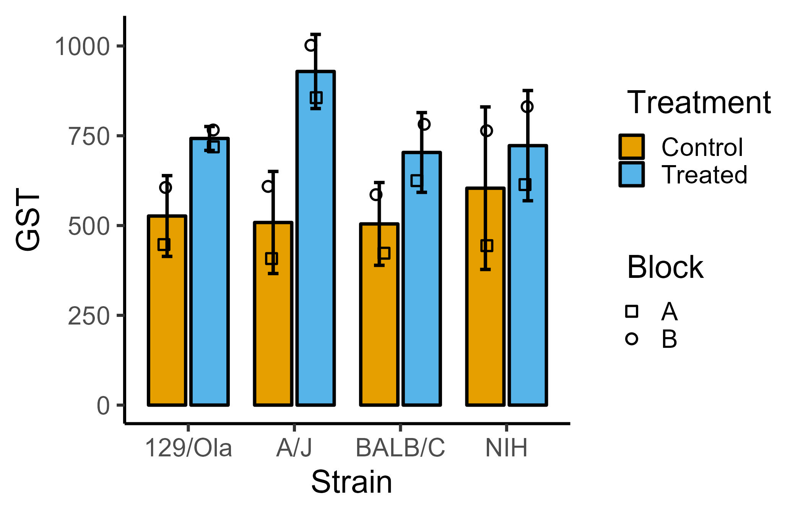
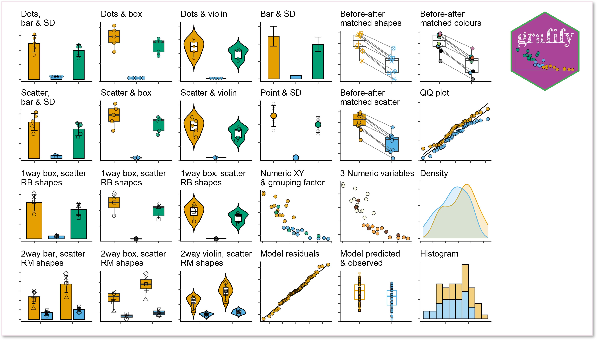
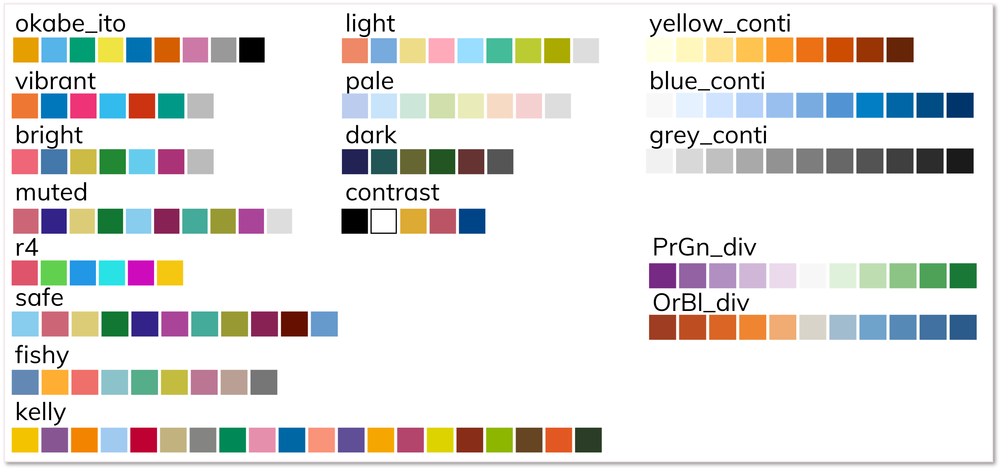

NA
Features
grafify has three main features:
- plotting great-looking graphs for quick-n-easy data exploration with few lines of code
- apply colour blind-friendly palettes to graphs plotted with
grafifyorggplot2 - use linear models for ANOVA (including those with randomised block designs and repeated-measures) & post-hoc comparisons (estimated marginal means, confidence intervals and P values)
The vignettes website has detailed help on usage and latest release notes are here.
As an example, you could write this to plot bar/SD graph from a 2-way ANOVA data with randomised blocks:
plot_4d_scatterbar(data = data_2w_Festing,
xcol = Strain,
ycol = GST,
bars = Treatment,
shapes = Block)
instead of all this!
ggplot2::ggplot(data = data_2w_Festing,
aes(x = Strain,
y = GST,
group = interaction(Strain,
Treatment)))+
stat_summary(geom = "bar",
aes(fill = Treatment),
position = position_dodge(width = 0.8),
fun = "mean")+
geom_point(aes(shape = Block),
size = 3, stroke = 1,
position = position_jitterdodge(jitter.width = .2,
dodge.width = .8))+
stat_summary(geom = "errorbar",
width = .2, size = 1,
fun.data = "mean_sdl",
fun.args = list(mult = 1),
position = position_dodge(width = 0.8))+
scale_shape_manual(values = 21:22)+
theme_classic(base_size = 21)+
theme(axis.text.x = element_text(angle = 45, hjust = 1))+
scale_fill_manual(values = c(as.vector(graf_palettes$okabe_ito[1:2])))Two other features including practice datasets (with randomised blocks), and data simulation for power analyses. The first three features are better documented at present.
Graphs
-
Easily plot data as scatter/dot plots with boxes, violins or bars with
plot_functions of 6 broad types.- Two variables (one categorical & one numeric): these graphs either use scatter (or also called jitter) or dot plot geometries:
plot_scatterbar_sd,plot_scatterbox,plot_scatterviolinorplot_dotbar_sd,plot_dotbox,plot_dotviolin - One-way or two-way ANOVA designs with or without randomised blocks (3 or 4 dimensions or variables):
plot_3d_point_sd,plot_3d_scatterbar,plot_3d_scatterbox,plot_3d_scatterviolinorplot_4d_point_sd,plot_4d_scatterbar,plot_4d_scatterbox,plot_4d_scatterviolin - Matched before-after graphs:
plot_befafter_colours,plot_befafter_shapes,plot_befafter_box - Quantitative X & Y, plus a third variable:
plot_xy_NumGroup,plot_xy_CatGroup - Data distributions:
plot_qqline,plot_densityplot_histogram, and model diagnostics withplot_qqmodel,plot_qq_gam,plot_lm_predictandplot_gam_predict - Graphs with SD, SEM or CI95 error bars:
plot_point_sd,plot_scatterbar_sd,plot_3d_scatterbar
- Two variables (one categorical & one numeric): these graphs either use scatter (or also called jitter) or dot plot geometries:

Colourblind-friendly colour schemes
The following 12 categorical (qualitative/discreet) and 5 quantitative (3 sequential and 2 divergent) palettes are implemented in grafify for making graphs with plot_ functions.
In addition, scale_fill_grafify and scale_colour_grafify functions can be used to apply all grafify palettes to any ggplot2 object.

All palettes are colourblind-friendly. (See Mike Mol’s blog and Paul Tol’s blog. Additional colour schemes were chosen from cols4all package).
grafify theme & adding log-scales
The theme_grafify function is a modification of theme_classic and enables graphs plotted with ggplot2 to have a grafify-like appearance.
plot_logscales lets you take any ggplot2 object and transform Y, X or both axes into log2 or log10 values, and latter will also show log10 tick marks.
Linear models for ANOVA
Get ANOVA tables and linear models with these easy wrappers.
- linear models for ordinary ANOVA:
simple_anova,simple_model,ga_model,ga_anova. - linear mixed effects for repeated-measures and randomised-block design ANOVA:
mixed_anova,mixed_model,mixed_anova_slopes,mixed_model_slopes,ga_model,ga_anova. - plot model residuals with
plot_qqmodelandplot_qq_gam. - plot model predictions with
plot_lm_predictandplot_gam_predict.
Post-hoc comparisons & Estimated Marginal Means (easy wrappers for emmeans)
Perform post-hoc comparisons based on fitted models for response variables and slopes. Get Estimated Marginal Means, P values, parameter estimates with CI95 with these wrappers.
-
posthoc_Pariwise,posthoc_Levelwise&posthoc_vsRef -
posthoc_Trends_Pairwise,posthoc_Trends_Levelwise&posthoc_Trends_vsRef
Vignettes
The best place to see grafify in action is the vignettes website, which has detailed description of all functions.
Latest version: v4.0.1 on CRAN or GitHub
Find out about latest updates here.
Citing grafify
Shenoy, A. R. (2021) grafify: an R package for easy graphs, ANOVAs and post-hoc comparisons. Zenodo. http://doi.org/10.5281/zenodo.5136508
Latest DOI for all versions: 
Installation
grafify is now on CRAN and can be installed by typing install.packages("grafify").
Any updates not yet on CRAN will be made available here first. To install from GitHub you also need to install the remotes package. Then type remotes::install_github("ashenoy-cmbi/grafify@*release").
grafify requires the following packages to be installed: car, emmeans, ggplot2, Hmisc, lme4, lmerTest, magrittr, mgcv, patchwork, purrr, stats, tidyr.
Motivation behind grafify
I made this package mainly for exploring data by quickly making graphs of different types. Secondly, to implement linear regressions for ANOVA. I also use it to introduce linear models in my teaching, including the analyses of randomised block designs to new users.
Statistics for Micro/immuno biologists
Also visit Statistics for Micro/Immuno Biologists for basic statistics theory and data analyses in R.
Function references
Go to this website for function documentations.